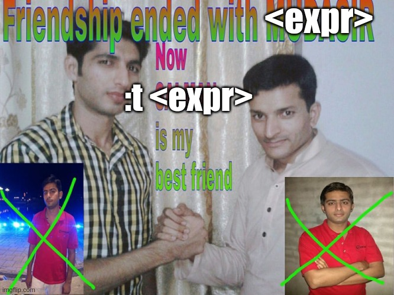

1. Babys First Haskell Functions
Let’s start with looking at two versions of the same thing. Hopefully this can be a bridge between what you know and the style Haskell uses:
- 1
-
The function declaration. Tells the compiler “this function exists” which helps out with ordering of function calls. Without this
main()will always have to be last inmain.c - 2
- The function definition. What the compiler uses to make assembly.
- 3
-
A recursive call and a
returnstatement. Because in C we differ between “statements” (things ending in;and some things using keywords likefor) and “expressions” (all things arithmetic).return (x + fact(x));is a statement but(x + fact(x))is an expression.
- 1
-
This is the “type signature” of the function. It says that it takes an
Int(the first mention) and returns (the second mention) anInt. - 2
-
The n to the left of
=is the argument to the function. Everything on the right side of=is the “return” expression.
Let’s look at elem:
ghci> elem 'a' "baba ganoush"
True
ghci> elem 'x' "baba ganoush"
False
ghci> elem 7 [1..5]
False
ghci>So what’s the type of elem? Run ghci> :t elem and you should get this:
elem :: (Foldable t, Eq a) => a -> t a -> BoolSmall letters, especially the a correspond to the generic type, like <T> in languages like Java or C++. In this particular case the generic type t (with a restriction Foldable t) represents a structure. So the t could be replaced with List or Set or Seq or many other types.
Let’s simplify this by forcing the Foldable into a list. This gives us:
The Haskell function elem is similar to \(\in\) from mathematics. In maths you would write something like \(\in : (a, \{a\}) \rightarrow \{T,F\}\) instead.
elem :: (Eq a) => a -> [a] -> BoolNow that’s A LOT better. It says that the element a has to have the Eq trait/interface.1 This means that the functions == and != has to be defined for a. If it does, then we can search for something of type a in a [a] (“list of a:s”) and we will get back a Bool.
1 It’s written class in Haskell but spoken about as “typeclass”.
Tutorial Structure / Your First Function
This tutorial will asks you to write your own version of existing library functions. In this first instance you will write myElem :: (Eq a) => a -> [a] -> Bool. So it has the same type as the library one, just my in front of it, to avoid naming conflicts.
Create a file Exercise.hs which looks like this:
1import Data.List
2import Data.Char
3myElem :: (Eq a) => a -> [a] -> Bool
4myElem e [] = False
5myElem e (x:xs) = undefined- 1
- Get all the list functions available in your terminal.
- 2
-
We will need some extra functions for
Charmanipulation. - 3
-
Declaration of the type of the function
myElem. All things of typeaneeds to be able to do==. It takes ana, a list ofaand returns a Bool. - 4
-
The “base case”. When looking for the element
ein an empty list, we won’t find it. So we return False. - 5
- This is where you’ll put your recursive call.
Now complete the function at the last line. Haskell is quite squeamish about indentation, so you might get a few compilation errors before you get it right.
Here’s an example of correct indentation for if, which also uses the let-in notation for local variable creation:
Writing Conventions
When making “alternate” version of existing values you usually stick a ' at the end. So in this case the string s1 becomes s1', pronounced as [s one prime] (swedish: [prim]). The contents of s1' and s2' is the same as s1 and s2 except that any characters not in lower case has been turned into lower case.
isCoolBeans :: String -> String -> String
isCoolBeans s1 s2 =
1 let s1' = map toLower s1
s2' = map toLower s2
2 in if (s1' == "cool") && (s2' == "beans")
3 then "yay!"
else "not so cool"- 1
-
You could place a
leton each line declaring a new value, but convention is to just do it on the first line in your declaration block. This block gives you two new values,s1'[s one prime] ands2'who are available to you after thein. - 2
-
The word
instarts the function. When usingifyou don’t need any special indentation. - 3
-
The rule here is that
thenandelsehas to be indented AND they have to have the exact same level of indentation. Maybe thethenclause contains a big let-in expression. That’s perfectly fine, and that will have its own indentation rules. As long as the matchingelseis at the same level asthen, it’ll be fine.
ghci> isCoolBeans "COOL" "bEaNs"
"yay!"A big trick in list function syntax is the : in the second argument to the function. Read it as
(x:xs)is a list whose first element is calledxand whose tail (rest of the list) is calledxs
Let’s now get back to myElem.
myElem e (x:xs) = if (e == x)
then True
else undefinedThat’s a bit better. Now you check against the first element of the list. But what if the call is elem 'b' "abc", then you’ll crash because you used undefined2. Here’s where you have to bring in recursion, so this is the complete function definition:
2 A magical placeholder word you should learn to use. It mostly means “I’ll solve this later.”
myElem :: (Eq a) => a -> [a] -> Bool
myElem e [] = False
myElem e (x:xs) = if (e == x)
then True
else myElem e xsIt’s a bit verbose, so given that “or” is defined as this:
The notation
_ for an argument means “We are not going to look at this argument when computing the result”.(||) :: Bool -> Bool -> Bool
True || _ = True
False || b = bTrying it out in ghci:
ghci> False || (False || False)
False
ghci> False || (False || True)
True
ghci> True || False
True
ghci> True || undefined
TrueLet’s use it for our myElem function!
myElem :: (Eq a) => a -> [a] -> Bool
myElem _ [] = False
myElem e (x:xs) = (e == x) || myElem e xsYour New Best Friend
If you’ve ever used Python you just put in your expression in the prompt and get the resulting value and side effects (such as file I/O & whatnot).
Haskell is extremely strict regarding its types. When a Python program will run and crash because of a programmer error, a Haskell program refuses to load in the first place.
To look a bit at what’s going on here, in ghci try using the :t command. It asks for the type of an expression. First ask about map:
ghci> :t mapThe part (a -> b) means that the first argument is a function, taking something of type a and returning something of type b.
Now let’s play with it a bit:

ghci> :t toLower
ghci> :t toLower 'A'
ghci> toLower 'A'
ghci> :t map toLowerBecause toLower has the type you saw (when running the above commands in ghci), those types gets bound up in map.
Using :t will be one of your primary tools for learning Haskell.
F**king Around With :t - Finding Out
First let’s look at the function length and then write our own, just to get away from the Foldable nonsense.
ghci> :t length
length :: (Foldable t) => t a -> IntNow make your own:
ghci> :t myLength
myLength :: [a] -> Int
ghci> myLength []
0
ghci> myLength ""
0
ghci> myLength [1..5]
5
ghci> myLength "abc123"
6myLength :: [a] -> Int
myLength [] = 0
myLength (_:xs) = 1 + myLength xsAnd also make one that enforces the String type.
ghci> :t myStringLength
myLength :: String -> Int
ghci> myLength ""
0
ghci> myLength "1234"
4
ghci> myLength [1..5]
<interactive>:76:17: error:
• No instance for (Num Char) arising from the literal ‘1’
• In the expression: 1
In the first argument of ‘myStringLength’, namely ‘[1 .. 4]’
In the expression: myStringLength [1 .. 4]myStringLength :: String -> Int
myStringLength cs = myLength csLet’s look at map again, which in many cases acts as your foreach function.
ghci> :t map
map :: (a -> b) -> [a] -> [b]Now, BEFORE asking ghci about the type of the below expression, can you figure out what it will be? It’s a matter of search-and-replace with the types that comes from the first argument to map.
ghci> :t map myStringLengthmap myStringLength :: [String] -> [Int]You could write a list of strings manually, which is kind of annoying:
["my", "list", "of", "strings"]Instead, try using the function words.
ghci> :t words
words :: String -> [String]
ghci> words "hello everyone reading"
["hello","everyone","reading"]Now combine map myStringLength with words into something computable. You will need to put parenthenses at the right place for this to work.
Now you have the most basic tools for learning Haskell. On to the exercise.